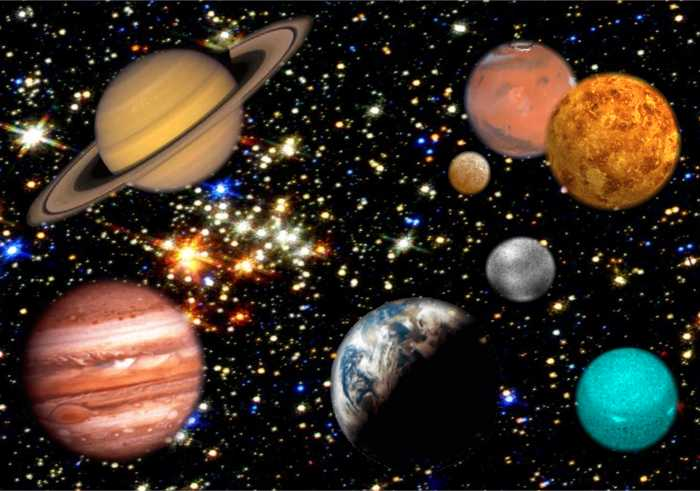

Travel Awesome Light Speed! says:
I like these things that are in space:
The Internet X infinity
Rockets
Thumbs up!
Now learn about the planets!
WIKIPEDIA SAYS THAT "The Solar System consists of the Sun and those celestial objects bound to it by gravity, all of which formed from the collapse of a giant molecular cloud approximately 4.6 billion years ago. The Sun's retinue of objects circle it in a nearly flat disc called the ecliptic plane, most of the mass of which is contained within eight relatively solitary planets whose orbits are almost circular. The four smaller inner planets; Mercury, Venus, Earth and Mars, also called the terrestrial planets, are primarily composed of rock and metal. The four outer planets, Jupiter, Saturn, Uranus and Neptune, also called the gas giants, are composed largely of hydrogen and helium and are far more massive than the terrestrials."

Space is totally in space